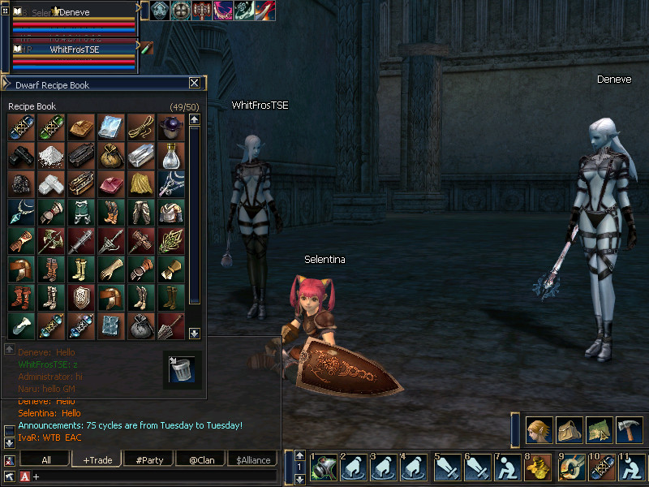
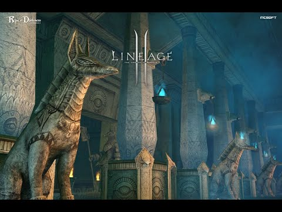
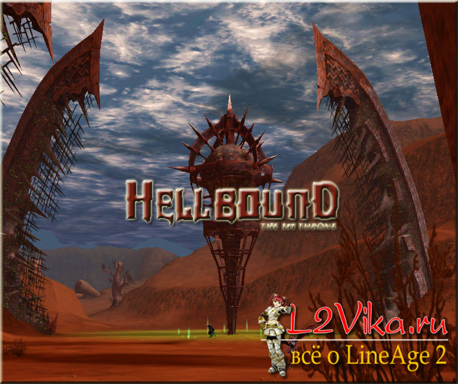
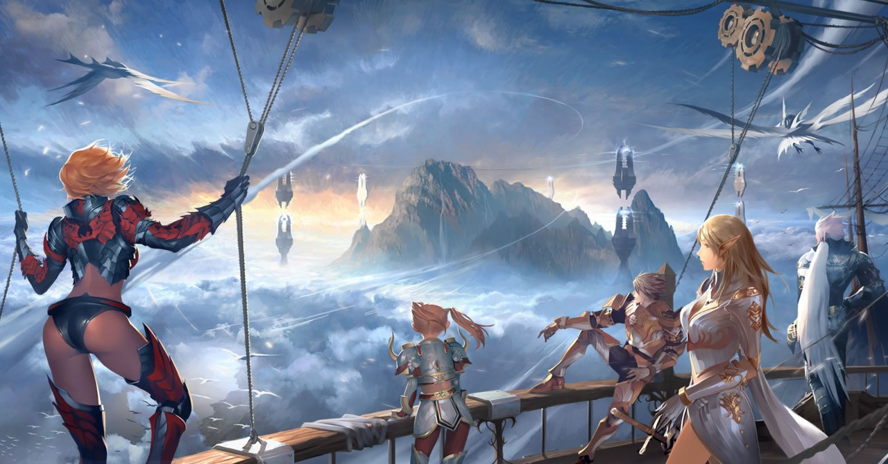
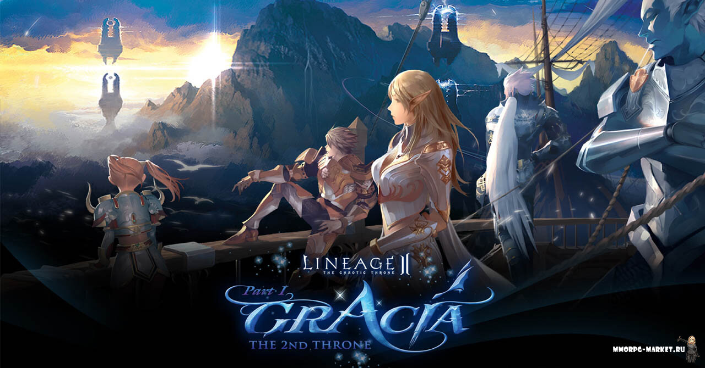

В Lineage 2 Chronicle 1: "Предвестники войны" были
добавлены новые монстры, предметы, квесты, осады замков. Данное расширение включает
в себя новые квесты, предназначенные специально для борьбы между высокоуровневыми игроками.
Разработчики добавили особый квест в Логове Дракона Antharas, наградой за успешное
выполнение которого является смертельно опасная схватка с Драконом Земли Antharas. Скорость
передвижения и атаки монстров была заметно увеличена. В Chronicle 1 появились специальные PvP-арены,
в случае смерти на которых не взымается штраф на получаемый опыт.Кроме всего прочего, следует отметить,
что игровой мир был значительно расширен. Команда разработчиков позаботилась о том, чтобы добавить десятки
видов дополнительного оружия, скиллов и брони. Одним из самых важных нововведений стало появление клан
холлов (Clan Hall), которые кланы могут приобрести на аукционе, вложив солидную долю внутриигровой валюты.
Дата выхода: 29 июня 2004 года.

Chronicle 2: Age of Splendor
Дата выхода: 8 декабря 2004 года.
Одним из главных нововведений Lineage 2 Chronicle 2: "Эпоха роскоши"
стало появление системы поместий Manor System, которая позволяла персонажам получать
дополнительные ресурсы. В стартовых городах стало можно найти карту города Map of Town,
что сделало навигацию по нему намного удобнее.
Система поместий Manor System Владельцы замков получают возможность торговать
различными семенами. Из них можно выращивать и собирать урожай, который позволяет
производить всевозможные предметы на продажу.
Выращивание и сбор урожая:
Осемененные мобы после гибели выбрасывают только адену.
Чтобы собрать урожай в городе, игроку потребуется приобрести Harvester, а затем
применить его на убитом осемененном мобе. Plant/Harvest работает также как и Spoil/Sweep
у собирателей. Обратите внимание, что осемененных мобов невозможно осеменить еще раз.
При сборе урожая или осеменении проводится проверка уровней.
Покупка урожая:
Урожай может быть продан только в определенном городе, в зависимости от его типа.
Только владельцы замков имеют право регулировать цену на урожай.
Если в вашей казне не хватает адены, все совершенные сделки немедленно отменяются.
Владельцы замков могут менять цены не чаще одного раза в день.
Торговцы NPC получают 10% от всех совершенных сделок.
Продажа Семян:
Именно тип Семян определяет тип урожая.
Важно учитывать, что чем больше Семян вы выставили на продажу, тем их стоимость будет
ниже. Законы рынка. Владельцы замков устанавливают размер налога на производство всех
типов Семян с помощью Castle Treasure NPC. Также как при покупке урожая, если адены в
казне хватать не будет, производство Семян за этот день отменится.
Только владельцы замков указывают, сколько Семян и какого типа требуется выставить на
продажу.В дни осады замка продавать Семена запрещено.
Покупка Семян:
Приобретение Семян ограничивается планкой максимально возможного их количества.
Прибыль от торговли семенами и остаток нераспроданных Семян по умолчанию переходят в
казну замка в конце дня.
Игроки могут покупать Семена у Manor-System Manager NPCs в любом городе.
Производство:
Владельцы замков могут производить вещи.
Конечный продукт производства переходит в распоряжение Владельцу замка и не может
быть продан. Требуется обратиться с заказом к Замковым кузнецам, чтобы получить ту
или иную вещь. Тип и количество и производимых предметов напрямую зависит от количества
вложений в сбор урожая. Производство длится две недели и не зависит от смены владельца
замка.
Разработчики позаботились о расширении игрового мира, добавив новые зоны:
Reed of Silence, Reed of Whisper, Aden, Watergarden of Eva, Tower of Hubris, I
nnadril, Narsell Lake, Devil's Isle, Crocodile Island, Tunnel of Pirates, Ruined Castle,
Hynes и Giran. Открылся ипподром Monster Race Track в южной стороне от замка Dion.
Изменения также коснулись структуры всех замков. Добавлены троны, на которых можно
величаво восседать. Появились места для размещения ловушек и свойство разрушаемости
стен. При осаде замка лагерь можно поставить один раз и в строго определенный период
времени. Теперь из казны замка можно брать только определенную сумму адены, на которую
установлены ограничения.
Каждый класс получил дополнительные заклинания и скиллы, как активные, так и пассивные.

Chronicle 3: Rise of Darkness
Хроники Chronicle 3: "Восстание тьмы" принесли с собой игровой ивент "Семь печатей", ознаменовавший
новый этап в развитии игрового мира Lineage II. В рамках ивента две фракции - Revolutionary Army of Dusk и
Lords of Dawn - ведут непримиримую борьбу за власть над семью печатями. Любой игрок среднего уровня получил
шанс принять непосредственное участие в ивенте. Во время него можно в качестве награды выдаются специальные
камни Seal Stones за уничтожение групп монстров. За них можно получить древние адены. Некрополисы и катакомбы,
в которых и проходил ивент, стали появляться повсеместно, получив название "каты". Именно в них спускались
группы игроков, чтобы заполучить заветные камни Seal Stones. Для того чтобы получить доступ к "катам",
требуется записаться на участие в "Семи печатях". Каждый этап ивента проходит в две недели. Во время первой,
которая называется Quest Event Period, игроки принимают участие в соревнованиях на фестивале Festival of
Darkness, зарабатывая камни и наполняя ими свое хранилище. Во время второй недели под названием Seal
Validation Period лучшие из участников награждаются древними аденами за сданные на хранение камни печатей.
По результатам соревнований определяются те, кто сможет получить доступ к "катам". Если игрок несмотря на
запрет пробрался в катакомбы, его незамедлительно телепортируют за пределы инстанса.
В этих Хрониках появилось оружие и броня класса A grade и система саб-классов, которая привела в восторг
игроков. Владелец замка Аден научился призывать огнедышащее существо из рода драконов под названием Wyvern,
расходуя на сие действие немалое количество ресурсов.
Дата выхода: май 2005 года.
Дата выхода: 8 февраля 2006 года.
В обновлении Lineage 2 Chronicle 4: "Наследники судьбы" разработчики добавили Олимпиаду и
систему Героев. Разумеется не забыли и про новые предметы, оружие и броню, локации, монстров и
саммонов. В игре появилась возможность порыбачить. С помощью рыбалки можно получить всевозможные
предметы и материалы для создания обычных вещей, включая напитки, краски и разные виды аксессуаров.
Важнейшим обновлением стало появление системы дворянства. Звание Героя мог получить любой дворянин,
заработавший в серии поединков на Олимпиаде больше очков, чем другие персонажи его класса. Вот почему
в каждом классе может быть только один Герой. Кроме того, произведено увеличение максимального уровня
персонажа до 78. Появились третьи профессии, которые можно получить после выполнения специального квеста,
и смертоносные скиллы для них. Разработчики реализовали оружие и броню нового класса S-ранг, которыми
могли воспользоваться только персонажи 76 уровня и выше. Если прокачать свой саб-класс до 75 уровня и
выполнить специальный квест, персонаж может получить звание Дворянина. Он владеет особыми заклинаниями и
навыками, которые предназначены для проведения осад и рейдов. Достигнув звания Дворянина, основной класс
вместе со всеми саб-классами получает дворянство. В результате, новые скиллы могут применяться основным
классом и саб-классами. В ходе состязаний на Олимпиадах определяются герои, которых выбирают среди
лучших бойцов PvP своего класса. Вместе со званием Героя персонаж получает доступ к эпическим вещам.
Каждый Герой начинает светиться особой аурой. Герой выбирается из основных классов по максимальному
количеству очков. Нужно, чтобы он провел не меньше пяти поединков во время Олимпиады. Здесь действуют
ограничения, которые не дают одному и тому же персонажу становиться героем каждый месяц. В следующий
раз получить это звание возможно лишь спустя два месяца.
Олимпиада
Олимпиада представляет собой систему PvP-сражений между персонажами одного или разных классов. Только
Дворяне с третьей профессией получают право на участие в Олимпиаде. По итогам каждого поединка начисляются
очки. Набравший наибольшее количество очков становится победителем Олимпиады.
Дата выхода: 6 сентября 2006 года.
В Lineage 2 Chronicle 5: Oath of Blood максимальный уровень персонажей повысили до 80.
Стало доступно проклятое оружие Cursed Weapon и первый меч данного типа Demonic Sword Zariche.
Более того, появились дополнительные замки, доступные для осад, вблизи городов Руна и Шуттгарт.
Разработчики провели кардинальные изменения в системе кланов. Главным из них стало повышение
максимального уровня клана до 8. На это уровне общая численность клана увеличена с 40 до 140 игроков.
Переработана структура кланов, в которых внедрено деление на отряды королевской стражи, ордены
рыцарей и Академию. В последней находятся те, кто не получил вторую профессию.
Кланпоинты - это очки репутации клана. Они требуются для прокачки уровня клана, приобретения и
активации новых пассивных клановых скиллов и создания новых структур. Очки репутации получают за
захват замка, убитого противника в ходе клановой войны, каждого выпускника Академии. Герои обрели
смертоносные скиллы, которые глобально меняють исход схватки. Их применение возможно только на
основной профессии персонажа. Примечатльным стало появление кристаллов Life Crystals, которые
можно заработать в сражении с рейд-боссами. За низ у NPC можно получить специальную броню.
Нововведения также коснулись локаций. Территории Orc, Rune и Dwarven подверглись объединению с
остальной частью континента. На территории Rune образовались 3 новых локации: Shrine of the Heretics,
Monastery of Silence и Stakato's Nest. А на территории Schuttgart - 6 новых локаций: Castle of the
Ice Queen, Demon's Dwelling, Winter's Labyrinth, Wildlands of Pillage, Pavel Ruins, Burial of Disgrace.
Разработчики поставили нового рейд-босса - сын императора Elmoraden по имени Frintessa. Он заключил
сделку с дьяволом и получил от него в награду вечную жизнь. Найти его можно за секретной дверью,
которая находится в глубине гробницы Imperial Tomb. Открыть ее можно, выполнив серию специальных
квестов. Герои в этом обновлении открыли доступ к следующим скиллам: Heroic Dread, Heroic Grandure,
Heroic Valour, Heroic Beserker и Heroic Miracle. Основные классы обзавелись дополнительными умениями.
Дата выхода: 11 апреля 2007 года.
Interlude: The Chaotic Throne ознаменовала собой завершение "Хроник" и начало
"Трона Хаоса". Изменения, коснушвиеся обмундирования, были очень важными. Разработчики
ввели недорогой призрачный тип экипировки, которая исчезала спустя некоторое время. Система дуэлей
В Interlude пояивлась система дуэлей, которая является полноценным PvP. Они проводятся при любом
уровне соперников, с которых не берется штраф за смерть. После завершения дуэли с персонажей
снимаются все дебаффы. Игрок может выбрать в меню настроек автоматический отказ от дуэлей. Они
проводятся как 1 х 1, так и пати х пати. Каждый этап дуэли длится не более двух минут. Только
лидер партии может бросить вызов членам другой партии. Схватка происходит на специальной арене.
Предупреждения
Если пати в командном канале принимает вызов на дуэль, ее исключают из командного канала.
Трейд любого члена пати автоматически отменяется при перемещении на арену. В том случае если
игрок нападает на NPC или сам атакован NPC во время дуэли 1 х 1, дуэль прерывается. И тогда
показатели HP/MP/CP не восстанавливаются. Игрок может преждевременно завершить дуэль с помощью
следующих способов: перемещение в область, где невозможна дуэль; команды /withdraw во время дуэли;
нападение на другого игрока, не участвующего в дуэли; нападение на NPC во время дуэли 1 х 1;
увеличение расстояния между игроками настолько, что прицел пропадает. По правилам дуэлей поединок
невозможен, если хотя бы один из членов пати: принимает участи е в Олимпиаде, на трейде или крафте,
принимает участие в осаде, принимает участие в другой схватке или дуэли. Также матч не состоится,
если запрос на дуэль направлен члену своей пати, в зоне, где запрещен рестарт, в зоне осады, нет
свободного места на арене, другой участник находится в Клан Холле во время осады. Нововведения
также коснулись системы улучшения оружия. Появилась возможность инкустрировать камни Life Stones,
которые падали дропом с мобов. Шанс заполучить высокоуровневый Life Stone заметно выше с рейдового
босса, чем с простого монстра. Оружие приобретает новые свойства и дает бонусы. Для проведения
процесса инкрустации следует обратиться к кузнецу. Камни делятся на следующие типы: Mid-Grade,
No Grade, High-Grade, Top-Grade. Кроме того, у них имеются свои уровни. Бонус, который оружие
получит в результате манипуляций, зависит от грейда камня. Обратите внимание, что персонаж не
сможет вставить Life Stone в том случае, если уровень камня выше уровня самого персонажа. Для
проведения процесса улучшения следует выбрать оружие, Life Stone и gem stone в окне улучшения.
Затем требуется переместить данные компоненты из инвентаря в это окно. После чего - нажать на Augment.
Существуют следующие типы бонусов от инкустрации: повышение боевых характеристик (P.Atk., P.Def.,
M.Atk., M.Def., HP, MP, CP, Accuracy, Evasion, Critical Chance), усиление базовых характеристик
(STR, CON, INT, MEN, появление дополнительного скилла (Active, Passive, Chance skill).В обновлении
был открыт доступ к новой локации Primeval Isle, который расположен южнее города Руны. Игрок может
переместится туда по воде. Здесь проводят охоту высокоуровневые персонажи. Боссом на острове
является монстр Sailren, в чье убежище можно попасть, выполнив задание Attack Sailren. На острове
игроки занимаются добычей особенных примитив кристаллов, которые падают дропом с мобов. Они делятся
на зеленые, голубые и красные
Камаэль были рождены в Эру Мифов. Эти загадочные существа сохранили свою уникальную культуру,
живя в границах Острова Душ. Их убежище расположено к западу от Деревни Темных Эльфов. Они
появились на континенте под предводительством богов. В отличие от остальных пяти рас, созданных
богами, целью их появления на свет стало противостояние неизвестным существам. Они родились в
собственной религии, которая служит Матери Норнил. Под ее покровительством, они посвятили свою
верю Богине Прошлого, которая управляет Историей, Богине Настоящего, которая записывает все
происходящее в данный момент, и Богине Будущего, которая предсказывает грядущее.
Cпециальные способности расы: у Камаэль имеется родство с тьмой, благодаря которому они повышают
собственную сопротивляемость к воздействию темных сил и понижают ее своим врагам. Они поглощают души
своих противников и используют их энергию, чтобы напитать свои скиллы особой силой. Большинство
их навыков могут быть активированы только за счет определенного количества поглощенных душ.
Камаэль могут носить только легкую броню. А когда используют восстанавливающую магию, к ним
применяется 60% штрафа.
Характеристика: Камаэль специализируются в различных профессиях, в зависимости от пола. По умолчанию, они становятся воинами. Тем не менее, все они обладают магическими способностями для поглощения душ.

The 1st Throne: Hellbound
Дата выхода: 23 апреля 2008 года.
Главным нововведением Lineage 2 The 1st Throne: Hellbound стало появление новых локаций.
Гланвым открытием стал Остров Ада, доступ к которому открывается после выполнения специального квест.
Здесь игрок сталкивается с высокоуровневыми монстрами 80-85 уровня, а также выполняет квесты на
получение оружия и брони S80 ранга. Steel Citadel представляет собой убежище рейд-босса Beleth.
Данная локация поделена на поля сражения. Чтобы попасть в Steel Citadel, потребуется войти в
доверие к местным жителям и на протяжении определенного времени платить им деньги. Steel Citadel
- внушающих размеров замок, поделенный на 4 секции - Tower of Naia, Base Tower, Tower of Infinitum,
Tully's Workshop. Заработала система, которая позволяет призывателям передавать часть своих атрибутов
петам. Эти способности относится только к классам Phantom Summoner, Elemental Summoner, Warlock.
Появились новые трансформации, включая редкие, которые длятся по 30 минут: Doll Blader, Heretic,
Oel Mahum, Vale Master, Saber Tooth Tiger, Zaken, Demon Prince, Anakim, Benom, Gordon, Ranku, Kechi.
Новые скиллы Hellbound имеют высокий уровень, начиная от 81. Они автоматически изучаются при
использовании свитка Forgotten Scroll. Эти свитки выпадают с Baium, Beleth, Frintezza, Antharas,
Valakas. Кроме того, появились новые скилы main class, которые определяются типом сабкласса вашего персонажа.

Gracia Part 1
Дата выхода: 12 августа 2008 года.
Lineage 2 Gracia Part 1 ознаменовала собой появление системы помощи новичкам, не достигшим
63 уровня, Систему энергии и альтернативный способ получения второй профессии. Система рекомендаций,
в свою очередь, была переименована в систему одобрения (Eval->Endorse System), хотя принцип ее работы
не изменился. Система Vitality System дает бонус к опыту персонажа во время охоты на мобов. Повышать
виталити возможно при охоте на рейд-боссов. При увеличении очков репутации и уровня виталити
дополнительные очки экспы, которые игрок заработает во время охоты, повысятся пропорционально
уровню виталити. При охоте на обычных мобов очки виталити снимаются. Показатель виталити
находится в окне статуса персонажа. Разработчики провели модицикации в системе боя. Был повышен урон,
наносимый в ближнем бою. Урон стал зависеть от того, насколько далеко находится противник. Урон от
стрельбы из луков и арбалетов зависит от расстояния до врага. Был повышен урон, наносимый заклинаниями
отравления и кровотечения.Новые скиллы Lineage 2 Gracia Part 1
Навыки, доступные при трансформации в Vanguard с 43 уровня - Power Divide, Full Swing, Double Strike,
Blade Hurricane. Навыки, доступные при трансформации в Inquisitor, начиная с 44 уровня - Divine
Punishment, Divine Flash, Surrender to the Holy, Divine Curse.
Сила физических скиллов в целом увеличена. В то время как потребление маня для физических скиллов
уменьшено. Потрбеление MP для следующих навыков было увеличено: Parry Stance, War Frenzy, Accuracy,
Silent Move, Guard Stance, Hard March, Soul Guard, Vicious Stance, Shield Fortress, Fortitude, True
Berserker, Strike Back. Многие скиллы Камаэль наконец могут работать без поглощения душ. Сила скиллов
повышается в зависимости от количества поглощенных душ.
Параметр Славы может быть у персонажа со второй профессией не ниже 40 уровня. Ее можно заслужить,
одержав победу над противником в PvP, принимая участие в осадах замков и крепостей, а аткже на
Фестивале Тьмы. Кроме того, Славу можно приобрести Noblesse Gate Pass через Olympiad Guide.
Она расходуется при применении различных навыков у Fame Guide, расположенном в городах Rune и Aden.
Появилась инстанс-зона Зал Бездны и открылся доступ в подземелье Камалока для ведения охоты на
рейд-босса. Для того чтобы в него зайти, требуется найти NPC Guard Captain. Ваша группа должна
состоять из 2-6 игроков. Время - 30 минут. Войти в Камалока можно только один раз в день. Имеются
следующие NPC в городах, от которых можно войти в Kamaloka.Новые квесты Lineage 2 Gracia Part 1:
Path to Hellbound, Traces of Evil, Invention Ambition, Good Work's Reward и A Special Order.

Gracia Part 2
Дата выхода: 27 октября 2008 года.
В обновлении Lineage 2 Gracia Part 2 особенных улучшений не было. Изменения в геймплее также не
производили. Зато появились новые инстансы, включая Pailaka, Kratei's Cube и Kamaloka - Labrynth of
the Abyss. Доступ к этому подземелью получают те игроки, которые взяли квест Pailaka.
Kratei's Cube - это зона PvP. Для того чтобы туда телепортироваться, следует побеседовать с NPC Paddies
на острове Fantasy Island. Здесь предлагается три арены для уровней 70-75, 76-79, 80+. Каждая из них
способна вместить до 25 игроков. Зарегистрироваться на участие в PvP игрокам 70 уровня и выше следует
лично у Kratei's Cube Entrance Manager. Обратите внимание, что персонажи, пребывающие в хаотическом
состоянии, не имеют права участвовать в схватках.
Вместе с Lineage 2 Gracia Part 2 в проекте появилась мини-игра. Доступ к ней открыт через Action Window
или при введении строки "/minigame" в игровом чате. В мини-игре жанра "3 в ряд" персонаж выстраивает
ряды из трех горизонтальных и вертикальных однотипных фигур. Занятное развлечение на случай, если
захочется сделать перерыв в боевых действиях.